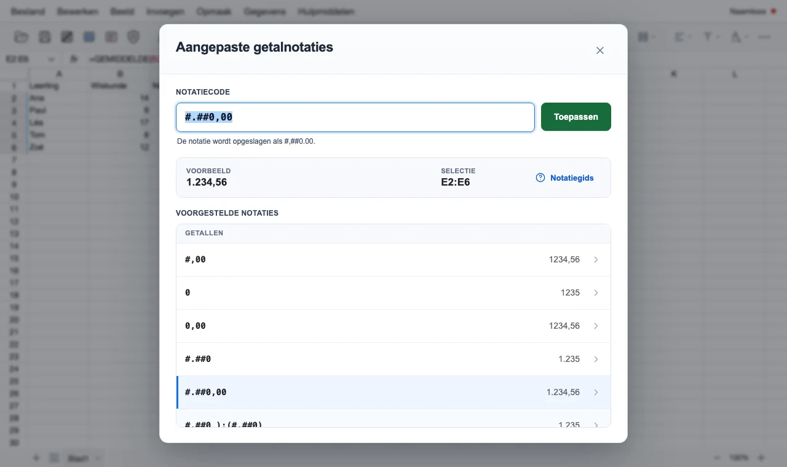

Getalnotaties
Een notatie verandert hoe een getal getoond wordt, niet zijn waarde: berekeningen behouden alle decimalen.
Een notatie kiezen
Opmaak › Getal, of de lijst Automatisch van de knoppenbalk.
| Notatie | Voorbeeld |
|---|---|
| Automatisch | 1200,09 |
| Platte tekst | 1200,09, links uitgelijnd; de invoer blijft een tekst |
| Getal | 1200,09 |
| Percentage | 120009,00%; 0,25 wordt 25,00% |
| Wetenschappelijk | 1,20E+03 |
| Boekhouding | €(1.200,09) |
| Valuta | €1.200,09 |
| Datum, Tijd, Datum en tijd | voor datums: 29-11-2017, 3:00 PM, 15:00… |
Het valutasymbool is dat van de taal van de interface.
| Knop | Effect |
|---|---|
| percentage | |
| een decimaal minder | |
| een decimaal meer |
Deze knoppen gelden ook voor de getallen van een lijst. Om de waarde zelf af te ronden, AFRONDEN gebruiken.
Aangepaste notatie
Opmaak › Getal › Aangepaste getalnotatie…: een voorgestelde notatie kiezen, of een code schrijven. Het voorbeeld toont het resultaat; Notatiegids herinnert aan de tekens; Toepassen geeft ze aan de selectie.

| Teken | Rol | Code | 1234,5 wordt getoond |
|---|---|---|---|
0 | een cijfer, ook nul | 0,00 | 1234,50 |
# | een cijfer als het nodig is | #,## | 1234,5 |
. | groepeert de duizendtallen | #.##0 | 1.235 |
% | percentage | 0% | 123450% |
"tekst" | een tekst, een eenheid | 0,0 "m" | 1234,5 m |
E+00 | wetenschappelijke notatie | 0,00E+00 | 1,23E+03 |
; | notaties voor positief, negatief, nul, tekst | 0;-0;"nul" | 1235 |
[Red] | kleur | 0;[Red]-0 | negatieve getallen in het rood |
De code wordt met de scheidingstekens van de taal getypt; het venster toont de vorm waarin ze wordt opgeslagen (#,##0.00), dezelfde als in Excel.
Datums en tijden
| Code | 29 augustus 2026, 14.30 uur |
|---|---|
dd/MM/yyyy | 29/08/2026 |
d mmm yyyy | 29 Aug 2026 |
dddd d mmmm yyyy | Saturday 29 August 2026 |
hh:mm | 14:30 |
dd/MM/yyyy hh:mm | 29/08/2026 14:30 |
Namen van maanden en dagen worden in het Engels getoond.
Eenheden
Onder Eenheden notaties als 0,00 "V", 0,00 "Ω", 0,00 "mm": de cel blijft een getal, waarmee gerekend wordt.